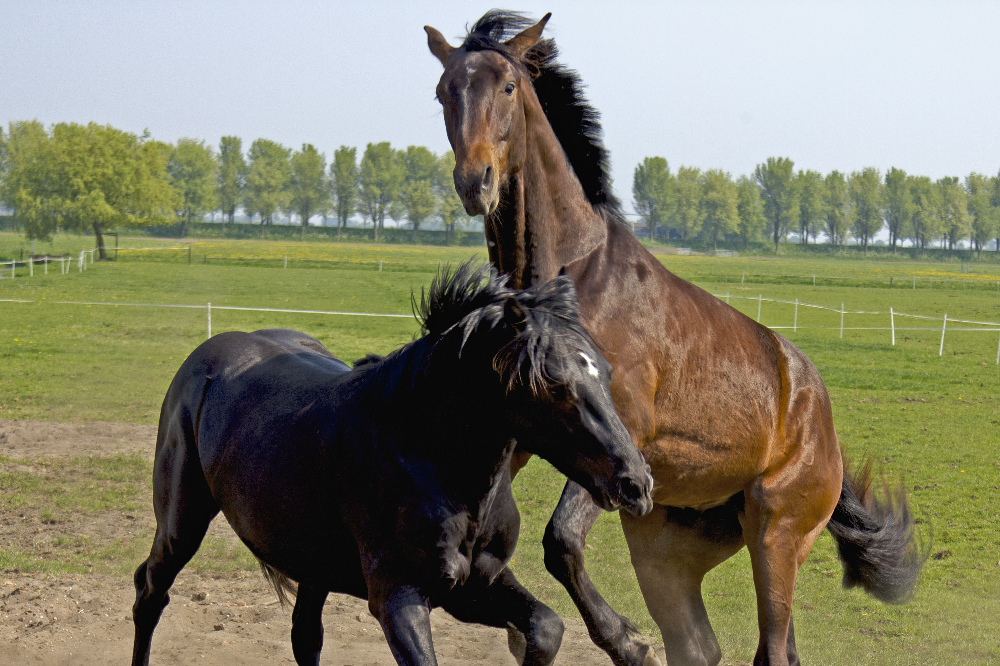
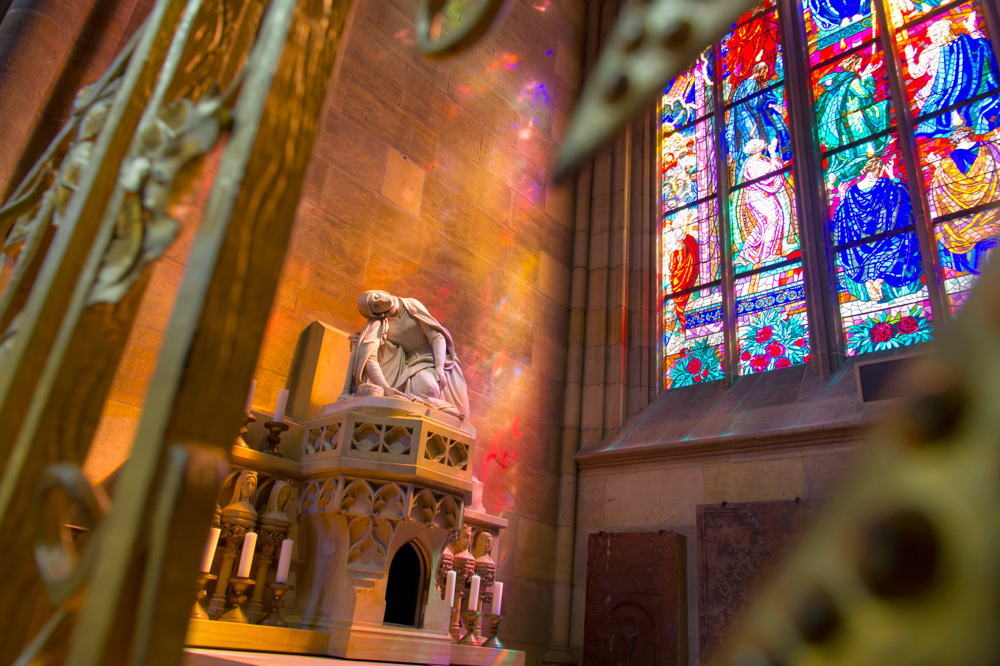
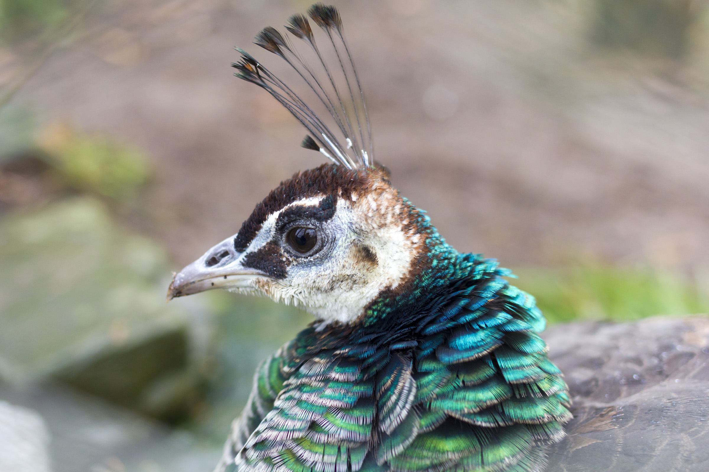
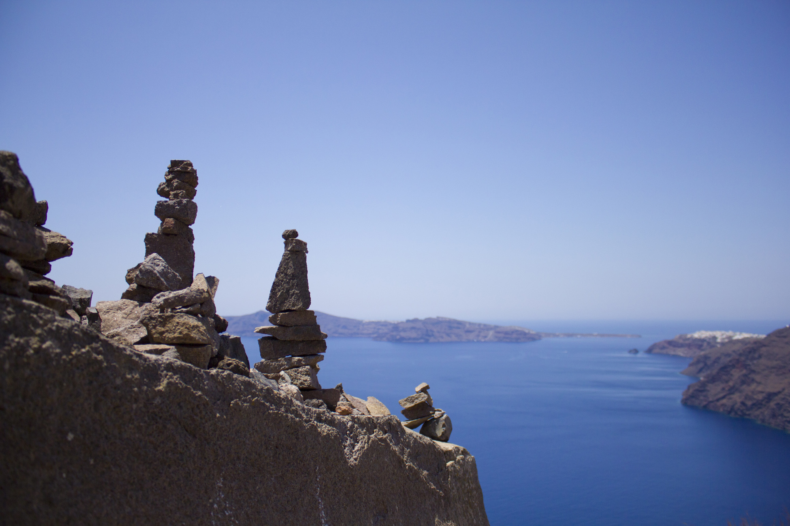

"Stop, you've violated the law"
Følgende bilder er supplert VIA creative commons under seksjon CC-BY og openverse.org lisenser
The following images are Liscenced by Airwolfhound and Coen Dijkman on Flickr respectively, under the
CC BY-SA 2.0 Deed
Copyright 2023 Airwolfhound




Copyright 2023 Coen Dijkman
The Creative Commons Attribution Share Alike
liscence describes that the following guidelines
are relevant for the image(s) in question.
The following information is excerpted from the official
creative commons
website.
You are free to:
Share — copy and redistribute the material in
any medium or format for any purpose, even
commercially.
Adapt — remix, transform, and build upon the
material for any purpose, even commercially.
The licensor cannot revoke these freedoms as long
as you follow the license terms.
"The Commissioning Rule"
According to
Copyright New Zealand
all commissioned work automatically gives the client copyright, unless otherwise is agreed.
Exerpt from the site:
In the Copyright Act (1994) is a section titled “Ownership of
Copyright.” In that section, it states that "Where:
(a) a person commissions, and pays or agrees to pay for, the
taking of a photograph or the making of a computer program,
painting, drawing, diagram, map, chart, plan, engraving, model,
sculpture, film, or sound recording; and
(b) the work is made in pursuance of that commission, that
person is the first owner of any copyright in the work."
Loosely, and more widely known as “The Commissioning Rule,” this
means that if you, as an artist, are commissioned to create
something, and the person commissioning it pays or agrees to pay
you, the owner of the copyright is not you, but them.
This- I would assume- would then extend to commercial commission
work such as movie posters.


These two posters are made by Rory Kurtz (Good Omens Season 2) and
Hokyoung Kim (Star Wars: The Bad Batch) and were both commissioned.
Though I personally believe credit should always be owed to the
artist, fact is that the copyright of these images belong to the
client (Amazon Prime and Walt Dsiney Studios Motion Pictures, respectively).
If the artist or the commissioned party wishes to retain copyright ownership over
the artwork this must be explicitly stated in the commissioning
contract, if this is not done during the commissioning process
this must be negotiated between client and artist, and the client
(the owner) must give the artist permission to use the work for
any- and everything.
For this reason many artists state that they
will still have partial ownership over the artwork and may use it
for self-promotion and may post it across social media. This ensures
that the artwork will not be used by the artist to gain money but
can still be used for personal self promotion.